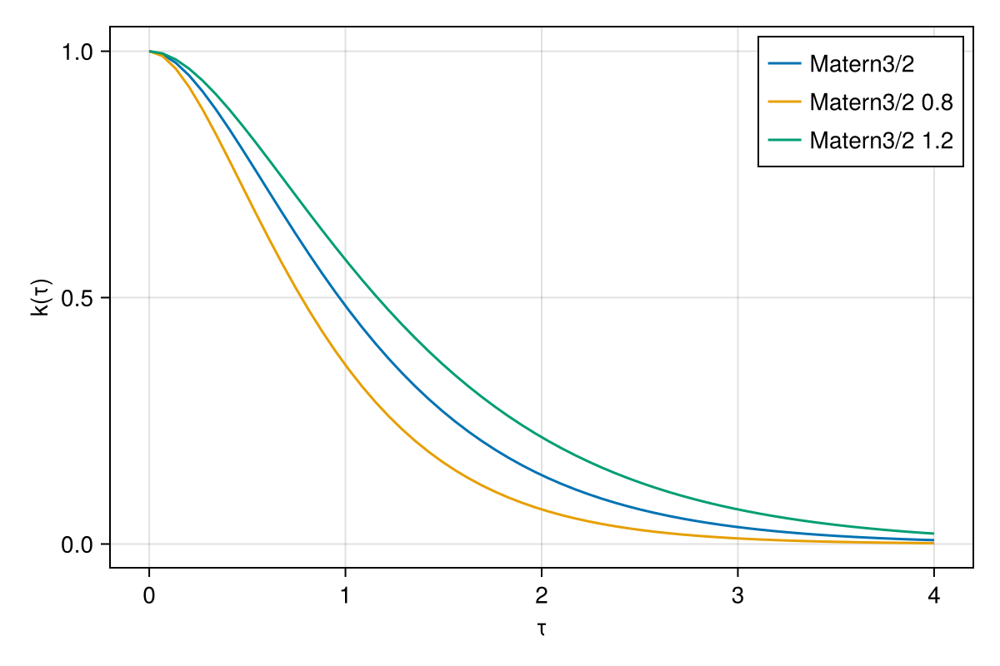
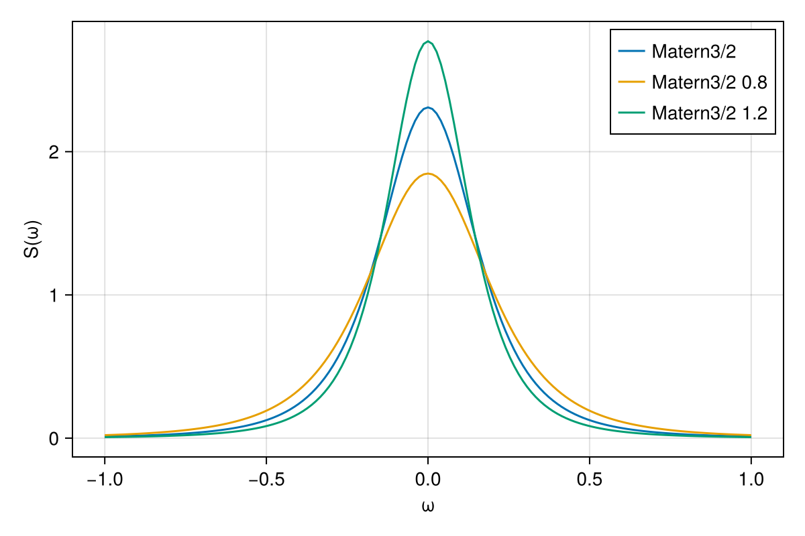
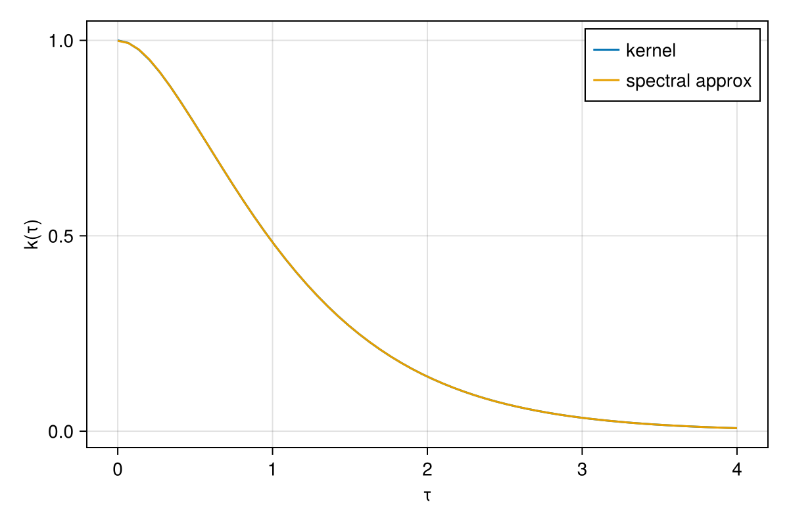

Kernel Densities

You are seeing the HTML output generated by Documenter.jl and Literate.jl from the Julia source file. The corresponding notebook can be viewed in nbviewer.
All stationary kernels can have a spectral density, which is the Fourier transform of the function $k(\tau) = k(x, x')$, where $\tau = t - t'$.
In other words, the spectral density is defined as
\[ S(\omega) = \int_{-\infty}^{\infty} k(τ) e^{-2 \pi \omega^T \tau} d\tau\]
In this notebook we show how we can recover the kernel from its spectral density.
Load required packages
using KernelSpectralDensities
using Distributions
using LinearAlgebra
using FastGaussQuadrature
using OrderedCollections
using CairoMakieIntro
First we define a few kernels, from KernelFunctions.jl, which is re-exported by KernelSpectralDensities.
kers = OrderedDict(
"Matern3/2" => Matern32Kernel(),
"Matern3/2 0.8" => with_lengthscale(Matern32Kernel(), 0.8),
"Matern3/2 1.2" => with_lengthscale(Matern32Kernel(), 1.2),
);We plot them here for illustration.
τ_interval = [0.0, 4.0]
τv = range(τ_interval...; length=60)
f = Figure(; size=(600, 400))
ax = Axis(f[1, 1]; xlabel="τ", ylabel="k(τ)")
for (key, ker) in kers
lines!(ax, τv, ker.(0, τv); label=key)
end
axislegend()
f
Now we can use a function from KernelSpectralDensities.jl to get its spectral density. The resulting object allows us to evaluate the spectral density for any frequency.
S = SpectralDensity(kers["Matern3/2"], 1)
S(0.5)0.12549068176931283We can also plot it over the interval we defined to see its shape.
w_plot = range(-1, 1; length=151)
f = Figure(; size=(600, 400))
ax = Axis(f[1, 1]; xlabel="ω", ylabel="S(ω)")
for (key, ker) in kers
Sp = SpectralDensity(ker, 1)
lines!(ax, w_plot, Sp.(w_plot); label=key)
end
axislegend()
f
Recovering the kernel
We can recover the kernel by integrating the spectral density over all frequencies.
First, we we define the stationary function and some interals
ker = kers["Matern3/2"]
k(t) = ker(0, t);For the numerical integration we use the GaussLegendre quadrature schema, which is more accurate and efficient than equidistant intervals. This allows us to define a new function, which numerically approximates the inverse Fourier transform of the spectral density.
w_interval = [-2.0, 2.0]
wv, weights = gausslegendre(300)
wv = (wv .+ 1) ./ 2 * (w_interval[2] - w_interval[1]) .+ w_interval[1]
c = (w_interval[2] - w_interval[1]) / 2
ks(t) = c * sum(S.(wv) .* cos.(2 * π * wv * t) .* weights);Results
We see that we indeed recover the kernel from the spectral density, with only a small error from the numerical integration.
f = Figure(; size=(600, 400))
ax = Axis(f[1, 1]; xlabel="τ", ylabel="k(τ)")
lines!(ax, τv, k.(τv); label="kernel")
lines!(ax, τv, ks.(τv); label="spectral approx")
axislegend()
f
Package and system information
Package information (click to expand)
Status `~/work/KernelSpectralDensities.jl/KernelSpectralDensities.jl/examples/1-densities/Project.toml` [13f3f980] CairoMakie v0.13.1 [0b91fe84] DisplayAs v0.1.6 [31c24e10] Distributions v0.25.117 [442a2c76] FastGaussQuadrature v1.0.2 [027d52a2] KernelSpectralDensities v0.2.0 `/home/runner/work/KernelSpectralDensities.jl/KernelSpectralDensities.jl#main` [98b081ad] Literate v2.20.1 [bac558e1] OrderedCollections v1.8.0 [37e2e46d] LinearAlgebra v1.11.0To reproduce this notebook's package environment, you can download the full Manifest.toml.
System information (click to expand)
Julia Version 1.11.3 Commit d63adeda50d (2025-01-21 19:42 UTC) Build Info: Official https://julialang.org/ release Platform Info: OS: Linux (x86_64-linux-gnu) CPU: 4 × AMD EPYC 7763 64-Core Processor WORD_SIZE: 64 LLVM: libLLVM-16.0.6 (ORCJIT, znver3) Threads: 1 default, 0 interactive, 1 GC (on 4 virtual cores) Environment: JULIA_PKG_SERVER_REGISTRY_PREFERENCE = eager JULIA_LOAD_PATH = :/home/runner/.julia/packages/JuliaGPsDocs/7M86H/src
This page was generated using Literate.jl.